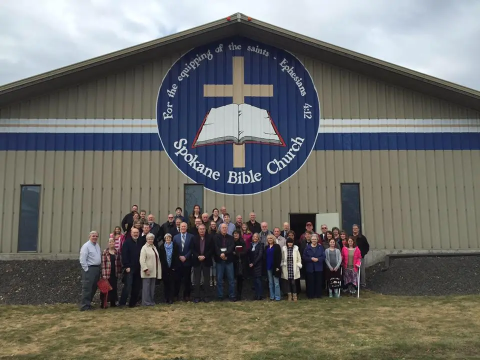

Spokane Bible Church (SBC) was founded in 1974 under the original languages teaching ministry of Dr. Tod Kennedy. At one point we met in a funeral parlor and later at a ladies club!
Today we own our own building. Our tradition of original languages teaching continues today under pastor-teacher Jeremy Thomas.